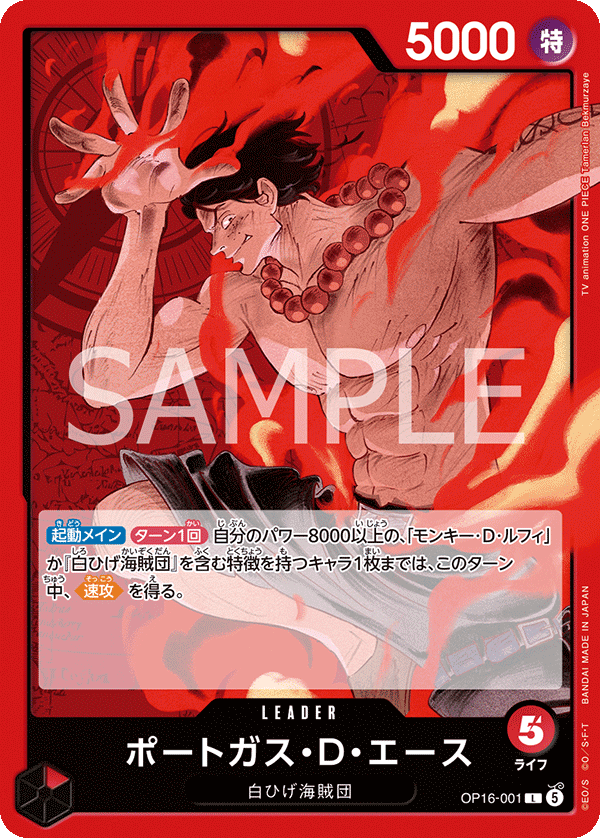
Portgas.D.Ace (001) (OP16-001)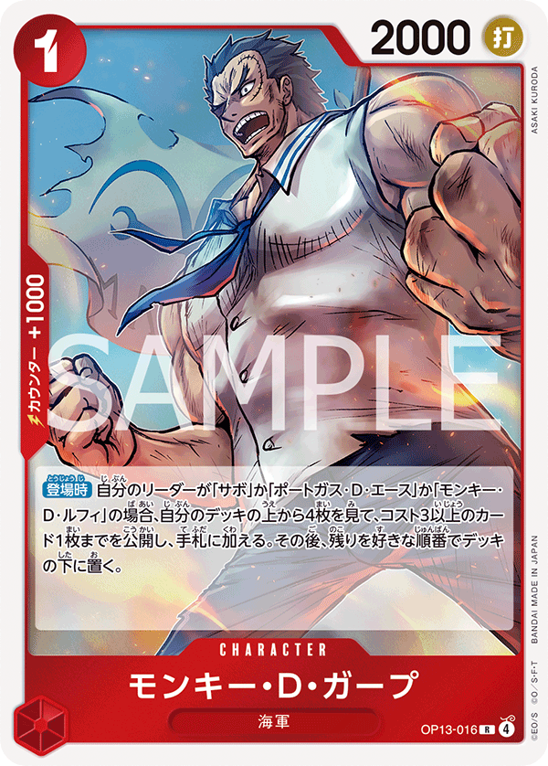
×4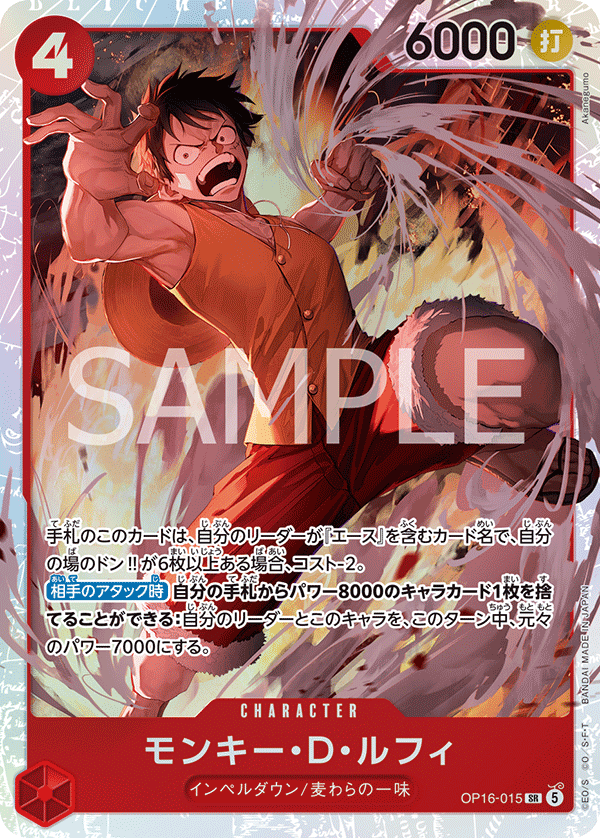
×4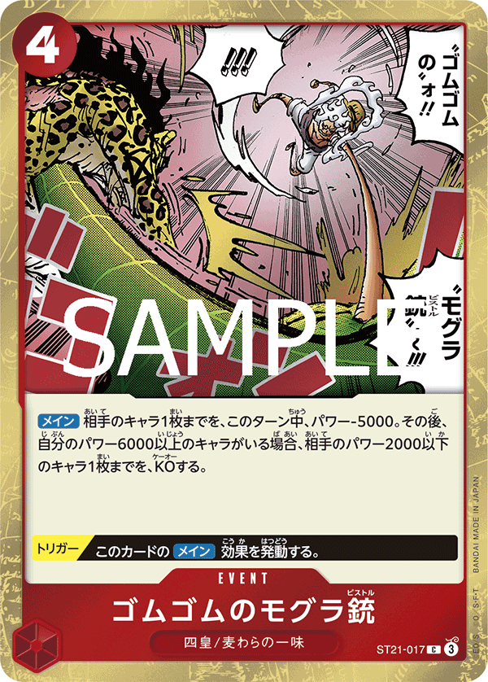
×2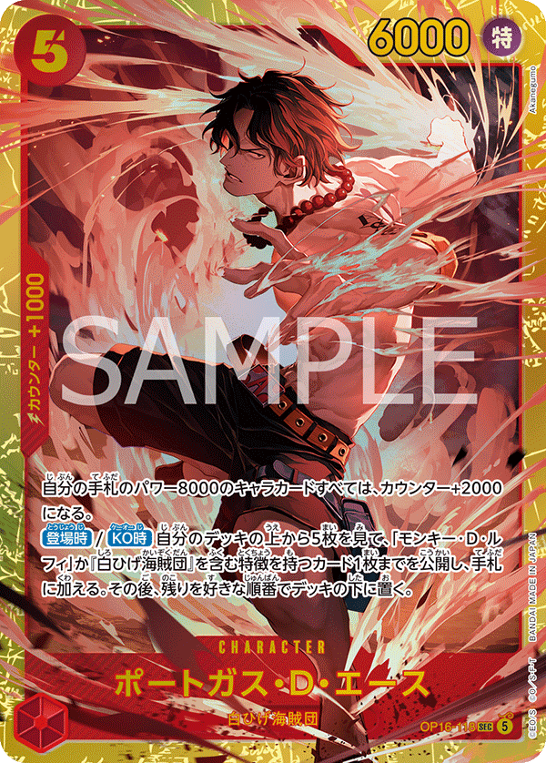
×4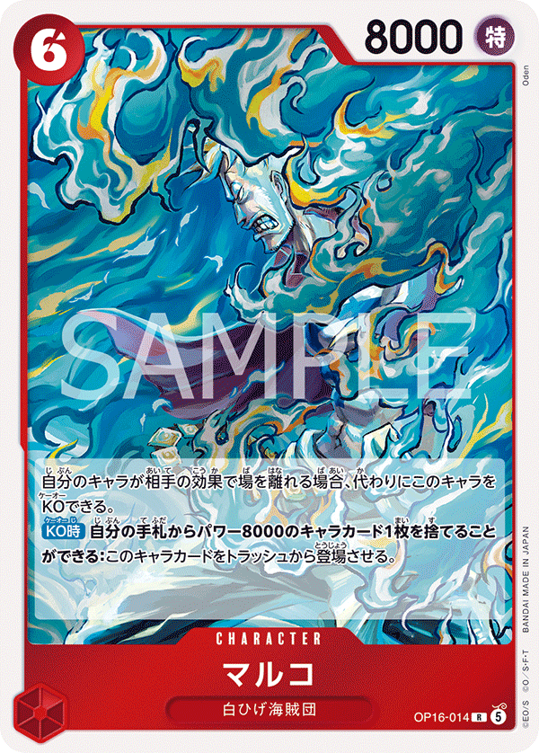
×4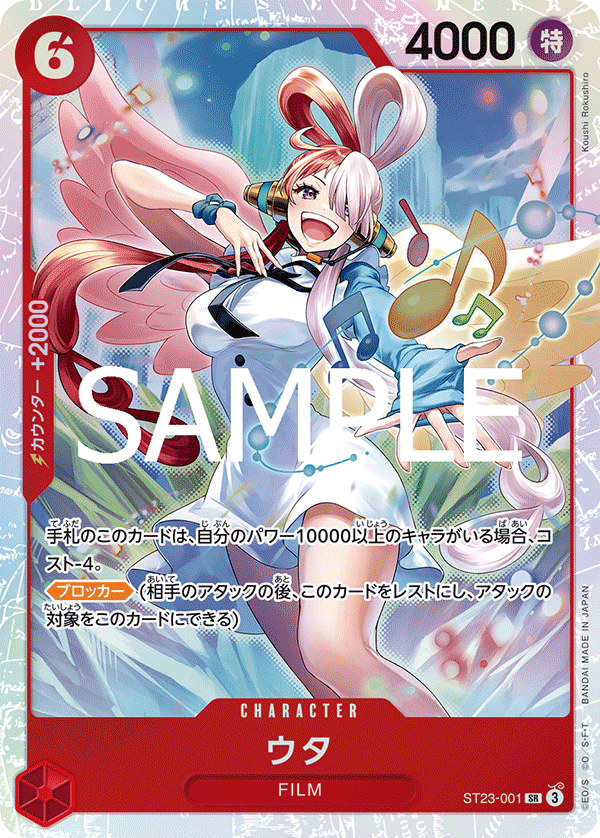
×3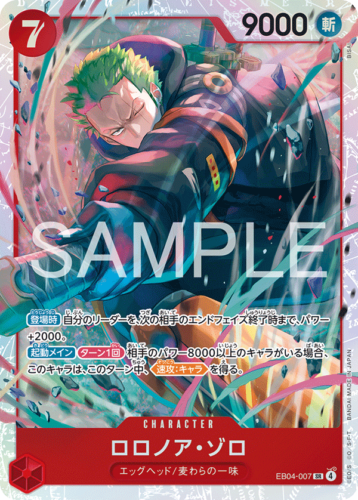
×2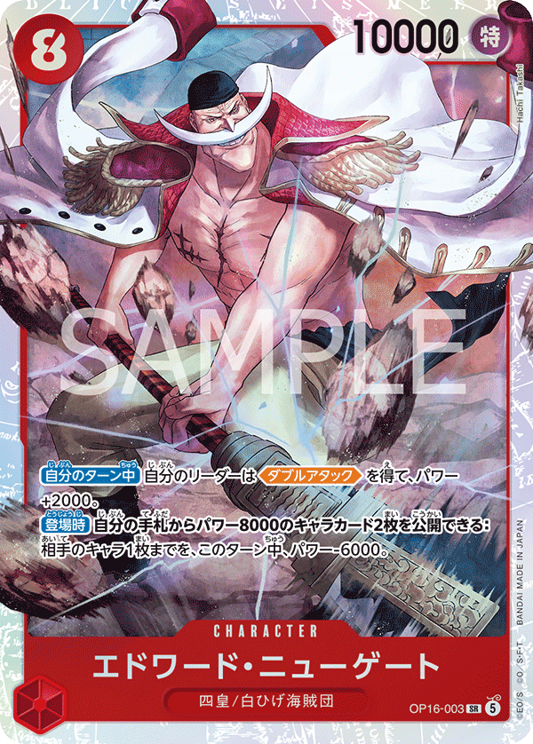
×3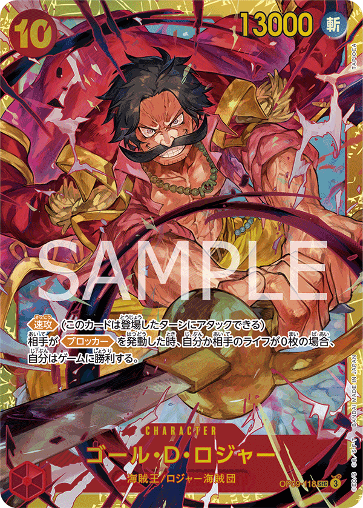
×1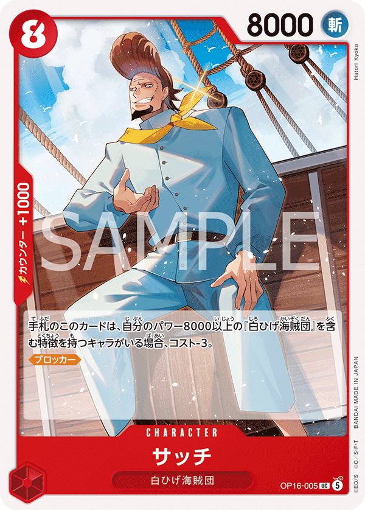
×3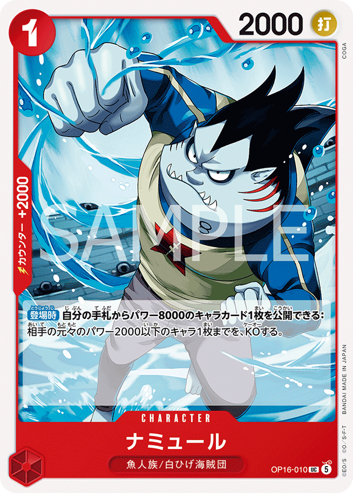
×4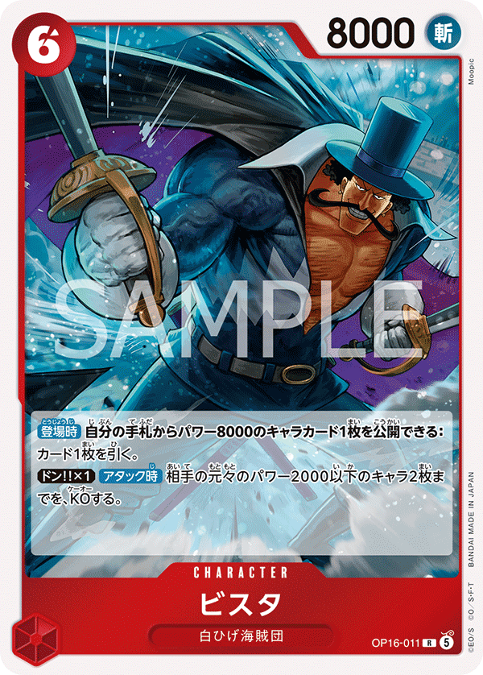
×4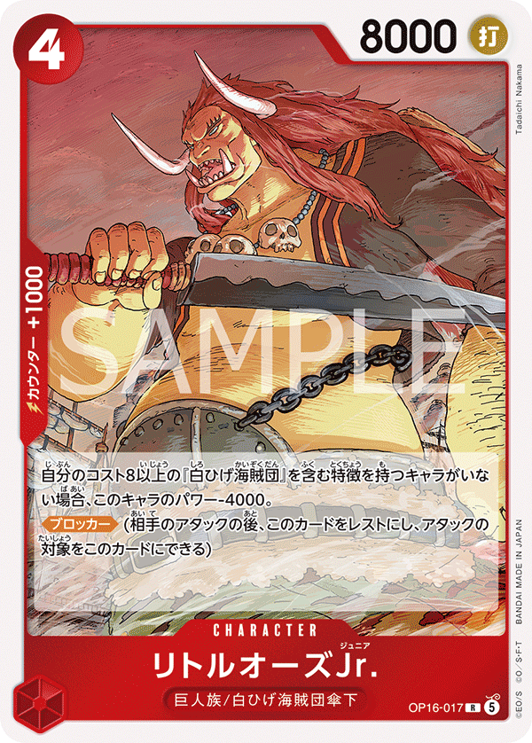
×4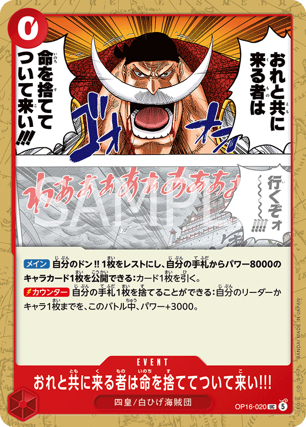
×4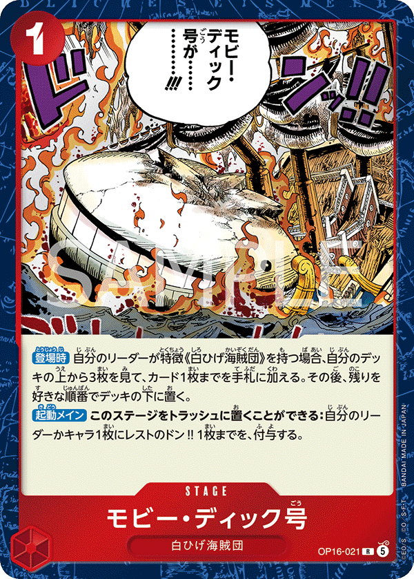
×4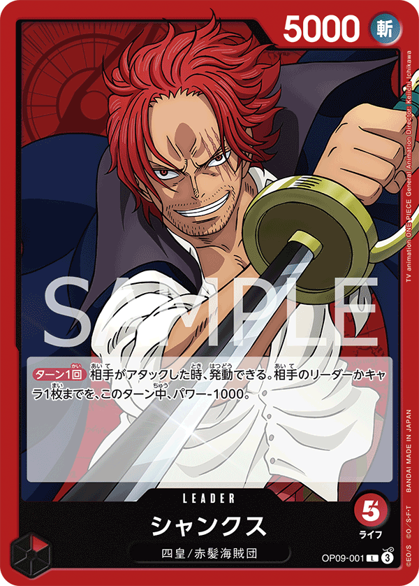
| Turn | Phase | Expected opp | My response | Cards |
|---|---|---|---|---|
| T1 | my_turn | Shanks plays OP09-002 Uta (Reprint) (1c, 2000). | Pass with 1 DON. | |
| T2 | opp_turn | Shanks leader 5000 swings (HITS Ace 5000 via tie). | Take 1 life. Save counters — Shanks's late game requires every counter. | |
| T3 | my_turn | OP09-011 Hongo (Reprint) (3c, 3000, 2000 counter) deploys. | Deploy OP13-016 Monkey.D.Garp (1c, 2000) + OP16-015 Monkey.D.Luffy (4c, 6000). Swing Ace 5000 + 1 DON = 6000 leader into Shanks 5000 leader — clean hit. | OP16-015 OP13-016 |
| T4 | opp_turn | OP12-008 Shanks (008) (4c, 6000) deploys or OP09-013 Yasopp (SP) (5c, 6000) lands. Multi-attack (median 2). | Counter 6000 swing: Ace 5000 + 2000 counter (OP13-007) = 7000 > 6000 = fail. Counter only ONE 6000 swing — eat the rest. Shanks pressures you to over-counter early. | OP13-007 OP13-016 |
| T5 | my_turn | OP09-013 Yasopp (SP) (5c, 6000) on board. OP09-009 Benn.Beckman (SP) prep. | Play OP16-014 Marco (Alternate Art) (6c, 8000). Activate Ace leader: Marco gains Rush. Speed Attack 8000 into Shanks 5000 leader — Shanks 5000 + 2000 counter = 7000, fails 8000. Or KO Yasopp 6000. | OP16-014 |
| T6 | my_turn | OP09-009 Benn.Beckman (SP) (7c, 7000) deploys or Shanks holds for OP06-007 SP. | Play OP16-003 Edward.Newgate (Alternate Art) (8c, 10000). Activate Ace leader: Newgate gains Rush. Speed Attack 10000 at Shanks 5000 leader — clean hit, Shanks burns multiple counters or eats. | OP16-003 |
| T7 | opp_turn | OP06-007 Shanks (SP) (10c, 12000) closes — 12000 swing requires Ace 5000 + 7000 stacked counter to fail. Unrealistic. | Eat the 12000 swing — at this point you're trying to survive to close on your T8 my-turn. Counter remaining 6000-7000 swings selectively with OP13-007 (2000 counter). | OP13-007 OP13-016 |
| Turn | Phase | Expected opp | My response | Cards |
|---|---|---|---|---|
| T1 | opp_turn | Shanks plays OP09-002 Uta (Reprint). | Pass. | |
| T2 | my_turn | Shanks leader 5000 swings (HITS Ace 5000 via tie). | Deploy OP13-016 Monkey.D.Garp + 1-cost. Swing Ace 5000 leader into Shanks 5000 leader — clean trade hit. | OP13-016 |
| T3 | opp_turn | OP09-011 Hongo (Reprint) deploys + Shanks leader swing (+1 DON = 6000). | Counter the 6000 swing: Ace 5000 + 2000 counter = 7000 > 6000 = fail. Or eat 1 life. | OP13-007 OP13-016 |
| T4 | my_turn | OP09-013 Yasopp (SP) (5c, 6000) or OP12-008 Shanks (4c, 6000). | Deploy OP16-118 Portgas.D.Ace (118) (5c, 6000). Swing Ace 5000 + 2 DON = 7000 leader + 6000 body. Force Shanks to counter or eat 2 lives. | OP16-118 OP16-015 |
| T5 | my_turn | Multi-attack (median 2). Shanks bodies stack. | Play OP16-014 Marco (Alternate Art) (6c, 8000). Activate Ace leader: Marco gains Rush. Speed Attack 8000 at Shanks leader. | OP16-014 |
| T6 | my_turn | Shanks deploys OP09-009 Benn.Beckman (SP) (7c, 7000) or holds for SP Shanks. | Play OP16-003 Edward.Newgate (Alternate Art) (8c, 10000). Activate Ace leader: Newgate gains Rush. Speed Attack 10000 at Shanks leader. | OP16-003 |
| T7 | opp_turn | OP06-007 Shanks (SP) (12000) drops + Beckman 7000 + leader swing. | Eat the 12000 swing. Counter the 7000 Beckman: Ace 5000 + 2000 counter = 7000 vs 7000 = tie attacker wins, so 7000 HITS. Needs +3000 counter to fail — unrealistic. Eat as much as possible, close on T8. | OP13-007 OP13-016 |
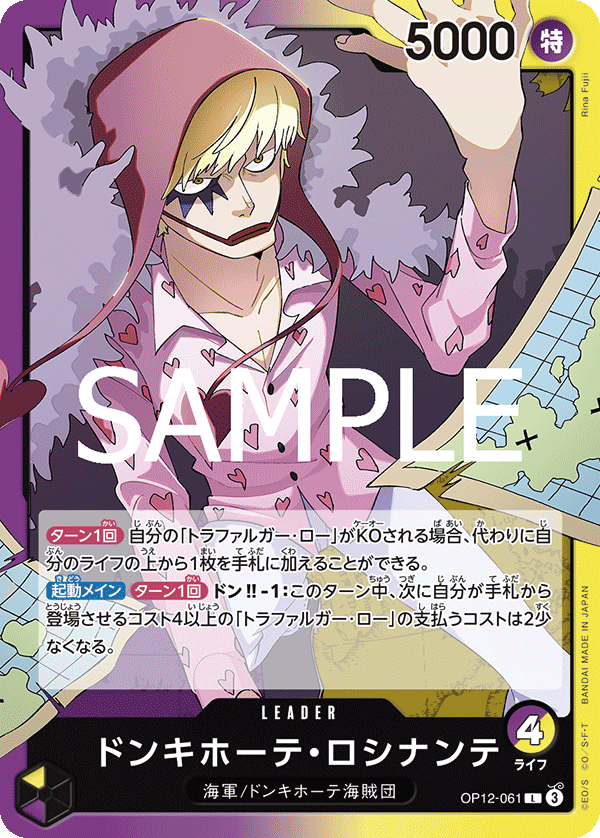
| Turn | Phase | Expected opp | My response | Cards |
|---|---|---|---|---|
| T1 | my_turn | Rosinante plays 1-cost setup. No attack T1. | Pass with 1 DON. | |
| T2 | opp_turn | Rosinante leader 5000 swings (HITS Ace 5000 via tie). | Take 1 life. At 5 life dropping to 4 is acceptable; save counters. | |
| T3 | my_turn | Rosinante deploys P-088 Trafalgar Law (4c, 5000, 2000 counter) or OP12-108 Donquixote Rosinante (1c, 2000) for ramp. | Deploy OP16-015 Monkey.D.Luffy (4c, 6000) + OP13-016 Monkey.D.Garp. Swing Ace 5000 + 1 DON = 6000 leader into Rosinante 5000 leader for clean hit. | OP16-015 OP13-016 |
| T4 | opp_turn | P-088 Trafalgar Law swings 5000 + Rosinante leader swings. Multi-attack (median 1-2). | Counter 6000+ swings: Ace 5000 + 2000 counter (OP13-007) = 7000 > 6000 = fail. Eat 5000 swings (need +2000 to fail and you'd burn 2 counters per swing). | OP13-007 OP13-016 |
| T5 | my_turn | EB04-038 Rosinante & Law (6c, 8000) deploys as midgame threat. | Play OP16-014 Marco (Alternate Art) (6c, 8000). Activate Ace leader: Marco gains Rush. Speed Attack 8000 into EB04-038 Rosinante & Law 8000 = 8000 vs 8000 = tie attacker wins, you KO it. Or swing at Rosinante 5000 leader for clean hit. | OP16-014 |
| T6 | my_turn | Rosinante stacks board with EB03-062 Trafalgar Law (8c, 6000) or holds counters. | Play OP16-003 Edward.Newgate (Alternate Art) (8c, 10000). Activate Ace leader: Newgate gains Rush. Speed Attack 10000 at Rosinante 5000 leader. Math: Rosinante 5000 + 1000 + 2000 + 2000 = 10000 vs 10000 = tie attacker wins, hits. | OP16-003 |
| T7 | opp_turn | Rosinante pushes lethal with EB04-038 (8000) + leader stacks. | Counter 8000 swing: Ace 5000 + 1 DON + 2000 + 1000 = 9000 vs 8000 = fail. Or eat — at this point race is yours. | OP13-007 OP13-016 |
| Turn | Phase | Expected opp | My response | Cards |
|---|---|---|---|---|
| T1 | opp_turn | Rosinante plays 1-cost setup. | Pass. | |
| T2 | my_turn | Rosinante leader 5000 swings (HITS Ace 5000 via tie). | Deploy OP13-016 Monkey.D.Garp + 1-cost body. Swing Ace 5000 leader into Rosinante 5000 leader — clean trade hit. | OP13-016 |
| T3 | opp_turn | P-088 Trafalgar Law (4c, 5000) deploys; Rosinante leader swing (+1 DON = 6000). | Counter the 6000 swing: Ace 5000 + 2000 = 7000 > 6000 = fail. | OP13-007 OP13-016 |
| T4 | my_turn | Multi-attack (median 2). Purple ramp lets Rosinante stack DON. | Deploy OP16-118 Portgas.D.Ace (118) (5c, 6000). Swing Ace 5000 + 2 DON = 7000 leader + 6000 body. Force counter spend. | OP16-118 OP16-015 |
| T5 | my_turn | EB04-038 Rosinante & Law (6c, 8000) lands. | Play OP16-014 Marco (Alternate Art) (6c, 8000). Activate Ace leader: Marco gains Rush. Speed Attack 8000 into EB04-038 Rosinante & Law (8000) — tie, attacker wins, KO. Or hit Rosinante 5000 leader. | OP16-014 |
| T6 | my_turn | Rosinante deploys EB03-062 Trafalgar Law (8c, 6000) or pushes for lethal. | Play OP16-003 Edward.Newgate (Alternate Art) (8c, 10000). Activate Ace leader: Newgate gains Rush. Speed Attack 10000 at Rosinante leader. | OP16-003 |
| T7 | opp_turn | Rosinante pushes lethal with stacked attackers. | Counter 8000 EB04-038 swing: Ace 5000 + 1 DON + 2000 + 1000 = 9000 > 8000 = fail. Eat smaller swings. | OP13-007 OP13-016 |
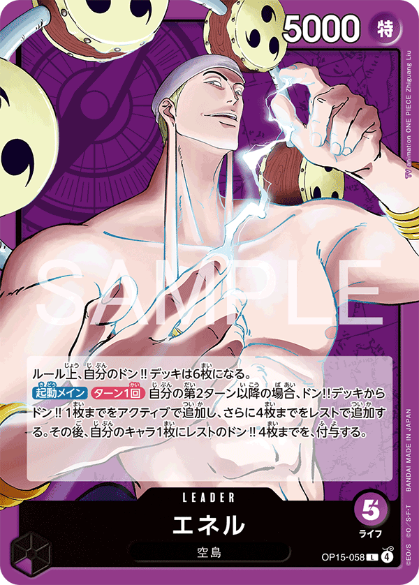
| Turn | Phase | Expected opp | My response | Cards |
|---|---|---|---|---|
| T1 | my_turn | Enel plays OP15-061 Ohm (1c, 2000) or OP15-067 Shura (1c, 2000) setup. | Pass with 1 DON. | |
| T2 | opp_turn | Enel leader 5000 swings (HITS Ace 5000 via tie). | Take 1 life. At 5 life dropping to 4 is OK. | |
| T3 | my_turn | Enel develops OP15-114 Wyper (5c, 6000) prep or 4-cost body. | Deploy OP16-015 Monkey.D.Luffy (4c, 6000) + OP13-016 Monkey.D.Garp. Swing Ace 5000 + 1 DON = 6000 leader into Enel 5000 leader — clean hit. | OP16-015 OP13-016 |
| T4 | opp_turn | OP15-114 Wyper (5c, 6000) deploys + leader swing. Multi-attack (median 1-2). | Counter 6000 Wyper swing: Ace 5000 + 2000 counter = 7000 > 6000 = fail. Eat the 5000 leader swing. | OP13-007 OP13-016 |
| T5 | my_turn | OP15-118 Enel (6c, 8000) lands. At 6 DON or less Enel has effect-immunity (bounce/KO-via-effect/trash all blocked). | Play OP16-014 Marco (Alternate Art) (6c, 8000). Activate Ace leader: Marco gains Rush. Speed Attack 8000 into OP15-118 Enel 8000 = tie, attacker wins, you KO it via combat (combat-KO path is NOT gated by effect-immunity). Critical play. | OP16-014 |
| T6 | my_turn | Enel re-deploys OP15-118 (another copy) or pushes board. | Play OP16-003 Edward.Newgate (Alternate Art) (8c, 10000). Activate Ace leader: Newgate gains Rush. Speed Attack 10000 at OP15-118 (8000) for clean KO, or hit Enel 5000 leader for damage. | OP16-003 |
| T7 | opp_turn | Enel pushes lethal with OP15-118 + Wyper + leader. | Counter the 8000 OP15-118 swing: Ace 5000 + 1 DON + 2000 + 1000 = 9000 > 8000 = fail. Or eat — at this point race math determines outcome. | OP13-007 OP13-016 |
| Turn | Phase | Expected opp | My response | Cards |
|---|---|---|---|---|
| T1 | opp_turn | Enel plays OP15-061 Ohm or OP15-067 Shura. | Pass. | |
| T2 | my_turn | Enel leader 5000 swings (HITS Ace 5000 via tie). | Deploy OP13-016 Monkey.D.Garp + 1-cost. Swing Ace 5000 leader into Enel 5000 leader — clean trade hit (attacker wins ties). | OP13-016 |
| T3 | opp_turn | Enel develops 3-4 cost body + leader swing (+1 DON = 6000). | Counter 6000 swing: Ace 5000 + 2000 = 7000 > 6000 = fail. Or eat 1 life. | OP13-007 OP13-016 |
| T4 | my_turn | OP15-114 Wyper (5c, 6000) lands. | Deploy OP16-118 Portgas.D.Ace (118) (5c, 6000). Swing Ace 5000 + 2 DON = 7000 leader + 6000 body. Force Enel to counter. | OP16-118 |
| T5 | my_turn | OP15-118 Enel (6c, 8000) lands with effect-immunity at 6-or-less DON. | Play OP16-014 Marco (Alternate Art) (6c, 8000). Activate Ace leader: Marco gains Rush. Speed Attack 8000 into OP15-118 Enel 8000 — tie, attacker wins, you KO it via combat. This is the critical answer to OP15-118. | OP16-014 |
| T6 | my_turn | Enel re-deploys OP15-118 or stacks board. | Play OP16-003 Edward.Newgate (Alternate Art) (8c, 10000). Activate Ace leader: Newgate gains Rush. Speed Attack 10000 at OP15-118 (8000) for clean KO, or hit Enel leader. | OP16-003 |
| T7 | opp_turn | Enel pushes lethal with OP15-118 + Wyper + leader stacks. | Counter the 8000 OP15-118 swing: Ace 5000 + 1 DON + 2000 + 1000 = 9000 > 8000 = fail. Eat 6000 Wyper if needed. | OP13-007 OP13-016 |
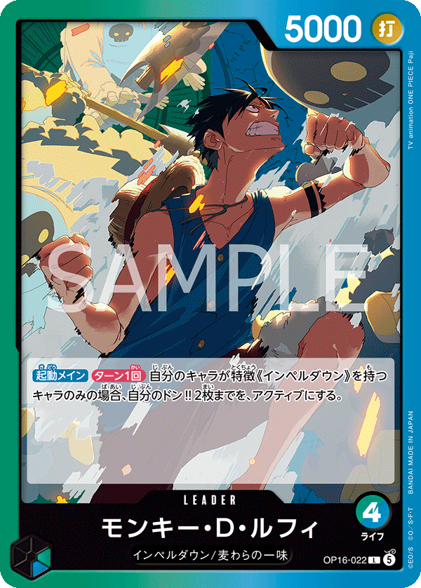
| Turn | Phase | Expected opp | My response | Cards |
|---|---|---|---|---|
| T1 | my_turn | Luffy plays 1-cost setup. No attack T1. | Pass with 1 DON (going first skips draw, draws 1 DON only). | |
| T2 | opp_turn | Luffy leader 5000 swings (HITS Ace 5000 via tie). | Take 1 life. At 5 life dropping to 4 is fine — counters are better spent later. | |
| T3 | my_turn | Luffy deploys a 4-cost Green/Blue body. | Deploy OP16-015 Monkey.D.Luffy (4c, 6000) — qualifies as a Monkey.D.Luffy character for Ace's leader effect later. Swing Ace 5000 + 1 DON = 6000 leader into Luffy 5000 leader for clean hit. | OP16-015 OP13-016 |
| T4 | opp_turn | Luffy multi-attack pressure (median 2). Bounce tools threaten OP16-015. | Counter 6000 swings: Ace 5000 + 2000 counter (OP13-007 Ace & Sabo & Luffy) = 7000 > 6000 = fail. Preserve OP16-015 Monkey.D.Luffy if possible — but it's not 8000+ so it doesn't get Rush yet. | OP13-007 OP13-016 |
| T5 | my_turn | Luffy stacks board with bounce/rest disruption. | Play OP16-014 Marco (Alternate Art) (6c, 8000). Activate Ace leader effect: Marco is a Whitebeard Pirates character with 8000+ power → gains Rush. Speed Attack 8000 into Luffy 5000 leader — clean hit. Luffy at 3 life or less. | OP16-014 OP16-118 |
| T6 | my_turn | Luffy pushes lethal setup. Multi-body attack. | Play OP16-003 Edward.Newgate (Alternate Art) (8c, 10000). Activate Ace leader: Newgate gets Rush. Speed Attack 10000 into Luffy leader — clean hit. Stack Ace 5000 + 2 DON = 7000 leader swing also. Luffy at 1 life or out. | OP16-003 |
| T7 | opp_turn | Luffy pushes for lethal with multi-attack if still alive. | Counter selectively. At 3+ life ahead of pace you can afford to eat 1-2 swings and close on your T7 my-turn. Save counters (OP13-007) for the 8000+ swings only. | OP13-007 OP13-016 |
| Turn | Phase | Expected opp | My response | Cards |
|---|---|---|---|---|
| T1 | opp_turn | Luffy plays 1-cost setup. | Pass. You start T2 with 2 DON. | |
| T2 | my_turn | Luffy leader 5000 swings (HITS Ace 5000 via tie). | Deploy OP13-016 Monkey.D.Garp (1c, 2000) + a second 1-cost. Swing Ace 5000 leader into Luffy 5000 leader — clean trade (attacker wins). | OP13-016 |
| T3 | opp_turn | Luffy deploys 4-cost body. Leader swing 5000-6000. | Counter the 6000 swing: Ace 5000 + 2000 counter = 7000 > 6000 = fail. Preserve board. | OP13-007 OP13-016 |
| T4 | my_turn | Luffy multi-attack (median 2). Bounce tools online. | Deploy OP16-118 Portgas.D.Ace (118) (5c, 6000). Swing Ace 5000 + 2 DON = 7000 leader + 6000 body. Two attacks at 6000-7000 force Luffy to spend counters or eat. | OP16-118 OP16-015 |
| T5 | my_turn | Luffy stacks bounce/rest disruption + multi-attack. | Play OP16-014 Marco (Alternate Art) (6c, 8000). Activate Ace leader: Marco gains Rush. Speed Attack 8000 into Luffy 5000 leader. Luffy at 2 life or less now. | OP16-014 |
| T6 | my_turn | Luffy lethal setup. | Play OP16-003 Edward.Newgate (Alternate Art) (8c, 10000). Activate Ace leader: Newgate gains Rush. Speed Attack 10000 at Luffy leader — game-closing swing. | OP16-003 |
| T7 | opp_turn | Luffy multi-attack lethal push. | Counter the threatening swings only. With Luffy at 0-1 life and you at 2-3 life, the race tilts you. Eat 5000 swings; counter 6000+ with Ace 5000 + 2000 = 7000. | OP13-007 OP13-016 |
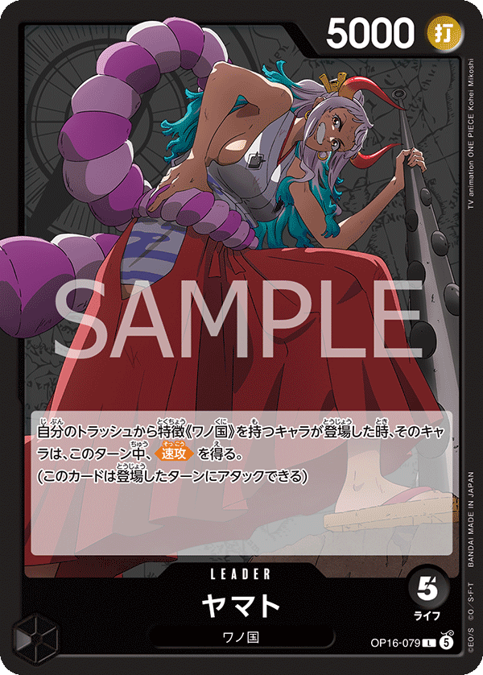
| Turn | Phase | Expected opp | My response | Cards |
|---|---|---|---|---|
| T1 | my_turn | Yamato plays 1-cost setup. | Pass with 1 DON. | |
| T2 | opp_turn | Yamato leader 5000 swings (HITS Ace 5000 via tie). | Take 1 life. 5000 swing needs +2000 to fail — wasteful to spend early. | |
| T3 | my_turn | OP16-082 Kin'emon (4c, 6000) deploys. | Deploy OP13-016 Monkey.D.Garp (1c, 2000) + OP16-011 OP16-011-style 3-cost body. Swing Ace 5000 + 1 DON = 6000 leader into Yamato 5000 leader — clean hit. | OP13-016 OP16-011 |
| T4 | opp_turn | Kin'emon swings 6000 + Yamato leader swings. Multi-attack (median 1-2). | Counter the 6000 Kin'emon swing: Ace 5000 + 2000 counter (OP13-007) = 7000 > 6000 = fail. Eat the leader 5000 swing. | OP13-007 OP13-016 |
| T5 | my_turn | OP16-098 Yamato character (6c, 5000) or Kin'emon stacks. | Play OP16-014 Marco (Alternate Art) (6c, 8000). Activate Ace leader: Marco gains Rush. Speed Attack 8000 into OP16-082 Kin'emon (6000) for KO. Yamato at 4-5 life still but their board cleared. | OP16-014 OP16-118 |
| T6 | my_turn | Yamato pushes OP16-085 Momonosuke setup or stacks board. | Play OP16-003 Edward.Newgate (Alternate Art) (8c, 10000). Activate Ace leader: Newgate gains Rush. Speed Attack 10000 at Yamato 5000 leader — Yamato 5000 + 1000 + 2000 + 2000 = 10000 vs 10000 = tie attacker wins, you hit. | OP16-003 |
| T7 | opp_turn | Yamato lethal push with stacked Momonosuke + Kin'emon + leader. | Counter the 6000 Momonosuke swing: Ace 5000 + 2000 = 7000 > 6000 = fail. Eat 5000 leader swing. Preserve hand for T7 my-turn close. | OP13-007 OP13-016 |
| Turn | Phase | Expected opp | My response | Cards |
|---|---|---|---|---|
| T1 | opp_turn | Yamato plays 1-cost setup. | Pass. | |
| T2 | my_turn | Yamato leader 5000 swings (HITS Ace 5000 via tie). | Deploy OP13-016 Monkey.D.Garp (1c) + 1-cost. Swing Ace 5000 leader into Yamato 5000 leader — clean trade hit. | OP13-016 |
| T3 | opp_turn | OP16-082 Kin'emon (4c, 6000) lands. | Counter 6000 Kin'emon swing: Ace 5000 + 2000 counter = 7000 > 6000 = fail. Or eat the swing. | OP13-007 OP13-016 |
| T4 | my_turn | Multi-attack (median 2). Kin'emon + Yamato leader. | Deploy OP16-118 Portgas.D.Ace (118) (5c, 6000). Swing Ace 5000 + 2 DON = 7000 leader + 6000 body. Force Yamato to counter or eat 2 lives. | OP16-118 OP16-015 |
| T5 | my_turn | OP16-098 Yamato character (6c, 5000) lands. | Play OP16-014 Marco (Alternate Art) (6c, 8000). Activate Ace leader: Marco gains Rush. Speed Attack 8000 into OP16-082 Kin'emon (6000) for KO or swing at Yamato 5000 leader for clean hit (8000 > 5000 + 2000 = 7000 = fail). | OP16-014 |
| T6 | my_turn | Yamato deploys OP16-085 Momonosuke or pushes lethal setup. | Play OP16-003 Edward.Newgate (Alternate Art) (8c, 10000). Activate Ace leader: Newgate gains Rush. Speed Attack 10000 at Yamato leader to close. | OP16-003 |
| T7 | opp_turn | Yamato pushes lethal. | Counter 6000 swings: Ace 5000 + 2000 counter = 7000 > 6000 = fail. Eat 5000 swings. | OP13-007 OP13-016 |
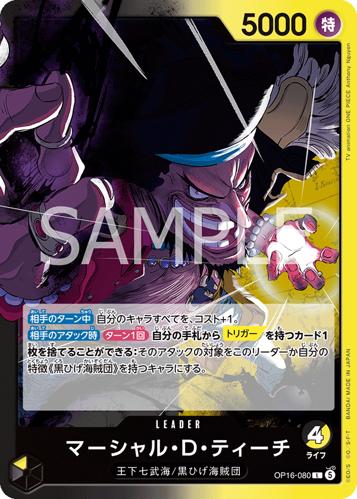
| Turn | Phase | Expected opp | My response | Cards |
|---|---|---|---|---|
| T1 | my_turn | Teach plays OP09-095 Laffitte (1c, 1000) or passes. No attack T1. | Pass with 1 DON (going first skips draw and only draws 1 DON). Hold cards for T2-T3 development. | |
| T2 | opp_turn | Teach leader 5000 swings — HITS Ace 5000 via tie. Median 1 attack T2. | Take the 1 life. At 5 life dropping to 4 is acceptable — don't burn counters on a 5000 leader swing; +1000 counter = 6000 vs 5000 = tie attacker wins, so +1000 does NOT prevent the hit. | |
| T3 | my_turn | Teach deploys OP09-095 Laffitte board or OP16-108-style 4-cost. Trigger-redirect pool building. | Deploy OP13-016 Monkey.D.Garp (1c, 2000, 1000 counter) and pump Ace leader to 6000 with +1 DON. Swing 6000 into Teach 5000 leader — clean hit, Teach burns a [Trigger] to redirect or eats 1 life. | OP13-016 OP16-015 |
| T4 | opp_turn | EB04-058 Borsalino (5c, 6000) deploys and swings 6000. Multi-attack — usually 1-2 (median 2). | Counter 6000 swing: Ace 5000 + 2000 counter (OP13-007 Ace & Sabo & Luffy 2000 counter or OP13-016 Garp 1000 counter stacked) = 7000 > 6000 = fail. Or eat 1 life and preserve counters. | OP13-007 OP13-016 |
| T5 | my_turn | Teach develops OP15-114 Wyper (5c, 6000) or holds for OP09-093 finisher. | Play OP16-014 Marco (Alternate Art) (6c, 8000). Activate Ace's leader effect: Marco gains Rush — swing 8000 immediately into Teach 5000 leader. Teach 5000 + 2000 counter = 7000, fails to stop 8000. Forces Teach to redirect or eat. | OP16-014 OP16-118 |
| T6 | my_turn | Teach deploys OP09-093 Marshall.D.Teach (10c, 12000) finisher. | Play OP16-003 Edward.Newgate (Alternate Art) (8c, 10000) and activate Ace's leader effect: Newgate gains Rush — Speed Attack 10000 into OP09-093 Teach 12000 = 10000 vs 12000 = fail; instead swing 10000 at Teach leader, force stacked counters. Math: Teach 5000 + 1000 + 2000 + 2000 = 10000 vs 10000 = tie attacker wins, you hit. | OP16-003 |
| T7 | opp_turn | OP09-093 Marshall.D.Teach (12000) swings. Teach pushes lethal with multi-attack. | Counter the 12000 swing: Ace 5000 + 1 DON + multiple counters needs +6000 stack to hold. Better — eat 1 life and preserve hand for your T7 my-turn closing push. At 5-life buffer you usually still have 2-3 life left here. | OP13-007 OP13-016 |
| Turn | Phase | Expected opp | My response | Cards |
|---|---|---|---|---|
| T1 | opp_turn | Teach plays OP09-095 Laffitte (1c) or passes. No attack T1. | Pass. You go first on T2 with 2 DON. | |
| T2 | my_turn | Teach leader 5000 swings (HITS Ace 5000 via tie). | Deploy OP13-016 Monkey.D.Garp (1c, 2000, 1000 counter) + OP09-095-style 1-cost body if available. Swing Ace 5000 leader into Teach 5000 leader — clean trade hit (attacker wins ties). | OP13-016 |
| T3 | opp_turn | Teach deploys OP16-108 or develops 3-cost. Leader swing 5000 (HITS via tie) or +1 DON = 6000. | Counter 6000 swing: Ace 5000 + 2000 counter = 7000 > 6000 = fail. Or eat 1 life — at 4 life (started 5) you have room. | OP13-007 OP13-016 |
| T4 | my_turn | EB04-058 Borsalino or OP15-114 Wyper on board (6000). | Play OP16-118 Portgas.D.Ace (118) (5c, 6000, 1000 counter). Swing Ace 5000 + 2 DON = 7000 leader + 6000 body. Two attacks force Teach to spend 2 [Trigger] cards or eat life. | OP16-118 OP16-015 |
| T5 | my_turn | Teach develops for OP09-093 setup or stacks Borsalino-type pressure. | Play OP16-014 Marco (Alternate Art) (6c, 8000). Activate Ace leader effect: Marco gains Rush. Swing Marco 8000 Speed Attack into Teach 5000 leader — Teach 5000 + 2000 counter = 7000, fails 8000. | OP16-014 |
| T6 | my_turn | Teach deploys OP09-093 Marshall.D.Teach (10c, 12000). | Play OP16-003 Edward.Newgate (Alternate Art) (8c, 10000). Activate Ace leader: Newgate gains Rush. Swing 10000 Speed Attack at Teach leader — force +5000 stacked counters or eat. | OP16-003 |
| T7 | opp_turn | Teach pushes lethal with OP09-093 (12000) + Wyper + leader. | Counter 6000 leader swing: Ace 5000 + 2000 counter = 7000 > 6000 = fail. Eat the 12000 OP09-093 swing — at this point you're closing on T7 my-turn so 1-life trade is fine. | OP13-007 OP13-016 |